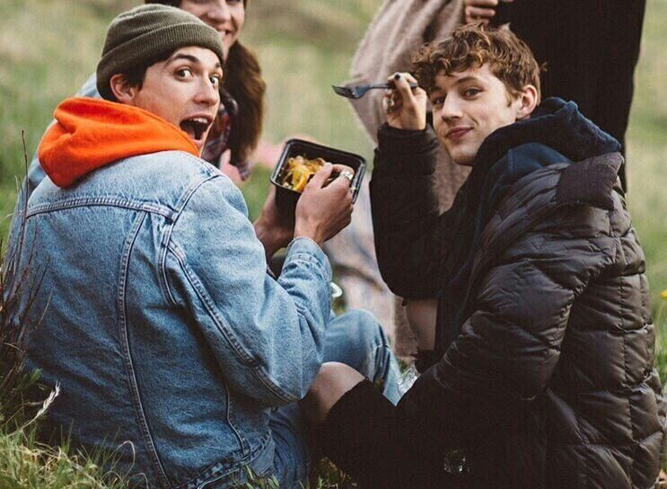

Troye Sivan - for him
收錄於Blue Neighborhood專輯裡，其中裡頭包含(Youth.Fool..)等知名歌曲，而這首歌有兩種版本，專輯裡的為Allday版本，之後還有推出verse4，都為Troye Sivan自己演唱。兩種版本的歌詞都像是寫給男朋友都一封信，而Troye還有其他歌也是類似這種方式，例如Strawberry And Cigarettes。雖然說這首歌沒有到非常廣為人知，連mv都沒推出，但我認為Troye本人應該也滿喜歡的，因為他在某場的巡迴演唱中，每場都有唱。
▲Allday Verse
而音樂類型是屬於Pop dance-pop，聽的時候可以不經意地察覺Troye平時和男友的互動方式。歌詞中有一段寫到’Then I'll squeeze your booty real hard like I'm kneading dough’，當時被許多歌迷撻伐，但我個人覺得滿可愛的。
▲Troye跟Jacob可愛的樣子
如果要問說兩種版本我比較愛哪個，我認為我還是會選第一個。因為它寫到比較多平時兩人相處時的用語，像pizza boy. I'd panic at the disco* and you'd rather watch a TV show…，雖然我們聽可能只能看到比較淺層的意思，和兩人相處中各自了解彼此，有一起體會過會有更深的理解不同，但就是因為如此才更充滿愛。第二個版本就比較通俗一點的詞語，比較沒有那麼經驗。但是兩種版本聽起來都是很舒服的!
上面提到的Strawberry And Cigarettes也很推薦各位去聽聽看，是一部名為Love,Simon的配樂，搞笑愛情類的。歌詞中也充滿意境，一直提到比較相反的詞語，像草莓和香菸，意思是說一個人比較成熟，一個人比較稚嫩單純，各位可以去細細的品嘗。
▲Strawberry And Cigarettes
LYRICS
We are runnin' so fast 我們跑得太快 And we never look back 從沒時間回頭 And whatever I lack 我所缺失的東西 You make up 你都為我補救 We make a really good team 我們真是一對好搭檔 And though not everyone sees 別人肉眼看不見 We got this crazy chemistry 存在著這完美的默契 Between us 就在我與你之間 Jump starting your car cause this city's a bore 跳上你的車我們逃離這沉悶城市 Buying e-cigarettes at the convenience store 在便利店裡買過電子香煙 Making new clichés on our own little tour 在這小旅程擺脫傳統浪漫 Let's ride 走吧 You don't have to say I love you to say I love you 你不用說"我愛你"來表達愛意 Forget all the shooting stars and all the silver moons 忘記一切閃亮流星和夜明銀月 We've been making shades of purple out of red and blue 我倆的色彩融為夢幻的紫色 Sickeningly sweet like honey, don't need money 甜膩似蜜糖的愛情，不用再多的金錢 All I need is you 我只需要你的愛 All I need is you 我只需要你 We try staying up late 試著徹夜不眠 But we both are light weights 但我們的酒量太差 Yeah we get off our face, too easy 不用一會，便爛醉如泥 And we take jokes way too far 然而我們把玩笑當認真 And sometimes living's too hard 有時候人生就是如此困難 We're like two halves of one heart 我們就如心臓的兩半，不可缺少了對方 You don't have to say I love you to say I love you 你不用說"我愛你"來表達愛意 Forget all the shooting stars and all the silver moons 忘記一切閃亮流星和夜明銀月 We've been making shades of purple out of red and blue 我倆的色彩融為夢幻的紫色 Sickeningly sweet like honey, don't need money 甜膩似蜜糖的愛情，不用再多的金錢 All I need is you 我只需要你的愛 All I need is you 我只需要你 [Verse 3 by Allday] Eat a pill, stay and chill, you don't need to go 嗑顆藥，冷靜點，你不用走 I'm about to bring emo back if you leave my home 假如你離開我，我大概又會當回個Emo* I'd panic at the disco* and you'd rather watch a TV show 我會在迪斯科嚇得雙腿發抖，而你在家中休閒看電視 Then I'll squeeze your booty real hard like I'm kneading dough 然後讓我大力捏你的翹臀，就像我在揉麵團 Pizza boy, I'm speeding for ya 我就像個送比薩的小伙子，只為了你加快腳步 We canna get married tonight if you really wanna 我們不要在今夜結婚，除非這是你真心渴望 Me in a cheap suit like a sleazy lawyer 只買得起廉價的西裝，穿得像個下流律師 And if you break my lil' heart, it'd be an honour 假若你傷害到我的弱小心靈，這也是我的榮幸 [Alternative verse by Troye Sivan/Verse 4]*** We're not a commercial for anyone else 我倆的感情不是用作商業宣傳的廣告 We go out for coffee 我們在咖啡店來場幽會 And keep it to ourselves 只屬於你和我的時光 We make little homes out of three star hotels 以三星酒店作我們的溫馨小窩 And I know what you're feeling 不用說出口，我知道你在想什麼 'Cause I feel it as well 因為我也能夠感受到，相同的溫暖 You don't have to say I love you to say I love you 你不一定要說"我愛你"來告訴"我愛你" Forget all the shooting stars and all the silver moons 忘記夢中的閃亮流星和夜明銀月 We've been making shades of purple out of red and blue 我的藍與你的紅混為完美的紫色 Sickeningly sweet like honey, don't need money 甜膩似蜜糖的愛情，不用再多的金錢 All I need is you 你是我唯一的渴求 All I need is you 你的愛是我的一切
無關緊要小訊息
- Troye Sivan現在是紅長頭髮，但我比較喜歡他以前有點白黃的髮型，不過他在一次的訪問中提到永遠都不會再將頭髮漂白了，因為他認為那毀了他的頭髮。
- 當時的製作For him.歌曲時的男友是Jacob Bixenman，令人高興的是他們感情依然很好，祝福他們永遠幸福。
- Troye Sivan是個孝順的孩子，在巡迴演唱時會帶著自己的爸媽，讓他們也能夠一起環遊世界!